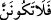

başkasına ihtiyaç bırakmayacak durumdadır.
“O’ndan başka bir hakem mi arayayım?”
Cümlede mef‘ul olan (
) “Allah’dan başka” ifadesinin öne alınması, esas
reddedilen hususun Allah’dan başka bir hakem aramak olduğunu bildirmek içindir.
Yoksa mutlak olarak “aramak” değildir.
Hakem, hâkime göre daha beliğ bir kelimedir ve uzmanlığa daha çok delalet eder.
Çünkü hakem, hâkimin aksine ancak âdil olana ve tekrar tekrar böyle hüküm verene
denir. Bu ifade de hem sözü söylemek, hem de gizlemek anlamı vardır.
“Ey Muhammed, de ki: Ben hakdan sapıp Allah Teâlâ’dan başkasını mı benimle sizin
aranızda bir hüküm vermek üzere taleb edeyim, arayayım?”
“Kendilerine kitab verdiklerimiz, onun” Kur’an’ın “gerçekten Rabb’in tarafından
indirilmiş olduğunu bilirler.” Bu cümle, öncekinin devamı olmayıp yeni bir cümledir.
Kendilerine güvendikleri ve hakem olmalarına râzı oldukları ehl-i kitabdan yahudi ve
hristiyan âlimlerinin Kur’an’ın hak olduğunu ve Allah Teâlâ katından indirildiğini
bildiklerini beyan etmektedir.
Kendilerine Tevrat’ı ve İncil’i anlamalarını sağladığımız yahudi ve hristiyan âlimler,
bu Kitab’ın, yani Kur’an’ın hakkı ve doğruyu ihtivâ eder olduğu halde Rabb’in
tarafından indirilmiş olduğunu bilirler.
“O halde hiç kuşkulananlardan olma!” Yani her ne kadar bildiklerinin emârelerini
ve tanıdıklarının gereklerini onlarda görmesen de onların, Kur’an’ın Allah kelâmı
olduğunu bildiklerinden hiç şüphen olmasın.
“
”nin başındaki “fe” harfi, ehl-i kitab âlimlerinin Kur’an’ın Rabb’in
tarafından indirildiğini bildiklerini haber verdikten sonra artık bu hususta şüpheye
düşmekten Rasûlullah (s.a.)’i nehyetmek içindir. “Gerçekten Rabb’in tarafından
indirilmiş” ifadesi ise teşvik ve kesin bilgi ile îman üzere sebâtını temin içindir.
Nitekim: “Sakın ortak koşanlardan olma.” (el-En‘âm 6/14) âyetinde de aynı durum
söz konusudur.
Allah Teâlâ, Kur’an’ın kendisi tarafından hak ile indirilmiş olması bakımından
kemâlini beyan ettikten sonra kendi zâtı bakımından olan kemâlini de beyan etmek üzere
şöyle buyurmaktadır:
115. Rabbinin sözü, doğruluk ve adalet bakımından tamamlanmıştır. O’nun
sözlerini değiştirecek kimse yoktur. O işitendir, bilendir.
“Rabb’inin sözü” “hem doğruluk, hem de adalet bakımından tamamlanmıştır.”
Burada Kitâb’a, yani Kur’ân’a “Rabb’inin sözü,” denilmiştir. Çünkü, doğruluk ve